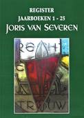

> nieuwsbrief > 2021 - nr 2
Inhoud
Mededelingen
Hernieuwen
ledenbijdrage voor 2021
Voor wie wel al de
ledenbijdrage van minimum 29 vereffende, evenwel zonder in te
tekenen op de biografie (waarover verder méér) kan dit alsnog
doen tot 15 april a.s. Daar toe kan het aanvullend bedrag (57
min het al betaalde bedrag) overgeschreven worden op
onderstaande rekening, met de vermelding suppl. Biografie.
Vereffening graag via onze rekening IBAN: BE71 0001 7058 1469
BIC: BPOTBEB1 t.n.v. Studiecentrum Joris van Severen,
Paddevijverstraat 2, 8900 Ieper.
Namenregister
over
de jaarboeken 1 - 25
Naast de uitgave van het 25e
Jaarboek Joris van Severen plannen we voor 2021 ook de
uitgave van een uitgebreid Register (120 paginas) van
alle persoonsnamen die in de jaarboekenreeks 1 tot en met 25
terug te vinden zijn. Dit Register zal zonder meerkost - als
bijlage bij het Jaarboek 25 (2021) aan alle leden toegestuurd
worden. Teneinde zicht te krijgen op de benodigde oplage raden
we iedereen aan zn ledenbijdrage (zie hoger) zo vlug mogelijk
te vereffenen. Naderhand eens het Jaarboek 25 (2021)
verschenen is zullen we voor dit Register een (nog te
bepalen) kostprijs dienen aan te rekenen. Het is dus zaak er
tijdig bij te zijn, m.a.w. de ledenbijdrage zo spoedig als
mogelijk te vereffenen.
Nieuwe biografie van Joris van Severen
Samen met het Jaarboek
Joris van Severen 25 zal ook de nieuwe biografie Joris
van Severen op leven en dood, letterlijk verschijnen bij
Uitgeverij Doorbraak, waarvan Luc Pauwels de auteur is (zie
verderop in dit nummer). In de boekhandel zal de prijs 35 (ex.
eventuele verzendkosten) bedragen.
U kan deze nieuwe biografie
via ons Studiecentrum bestellen in combinatie met het Jaarboek
Joris van Severen en het Register, aan de ledenprijs van 57
voor het totale pakket. Ook hier geldt evenwel de voorwaarde dat
we uw intekening (en betaling) tijdig kunnen registreren. Dit
aanbod geldt tot uiterlijk 15 april 2021. Zie ook verderop.
Herdenkingen 20 mei 1940 in Covid-tijden
Voor het tweede jaar op een
rij dreigt de nog steeds heersende pandemie het gebruikelijke
stramien van de jaarlijkse herdenkingsplechtigheden te Brugge en
te Abbeville te doorkruisen. Bij het afsluiten van de redactie
voor dit nummer tasten we hieromtrent nog in het duister.
Op de paginas 8 en 9
verderop leest u de minimum-scenarios die we momenteel hopen
alsnog te kunnen handhaven voor 22 en 23 mei 2021. Wat daarvan
mogelijk zal blijken is afhankelijk van de duur van de
beperkingen op de erediensten en op het grensoverschrijdend
verkeer. Dat zal de tijd ons leren. Zie verderop.
Ten geleide bij het
Jaarboek Joris van Severen 25 (2021)
Met dez e aflevering zijn we aan het 25e Jaarboek Joris van Severen
toe. Een mijlpaal in de werking van het Studiecentrum Joris van
Severen, doch beslist nog geen eindpaal. Uitschieters in de
jaarboekenreeks waren ongetwijfeld Die vervloekte oorlog,
het integrale oorlogsdagboek van Joris van Severen, naast de
grote en uniek te noemen Fotobiografie. Voldoende
aanleiding vonden we om het thans al verrichte werk te
inventariseren middels de publicatie van een overzichtelijk Register
over de thans verschenen 25 jaarboeken, als annex bij deze
editie.
e aflevering zijn we aan het 25e Jaarboek Joris van Severen
toe. Een mijlpaal in de werking van het Studiecentrum Joris van
Severen, doch beslist nog geen eindpaal. Uitschieters in de
jaarboekenreeks waren ongetwijfeld Die vervloekte oorlog,
het integrale oorlogsdagboek van Joris van Severen, naast de
grote en uniek te noemen Fotobiografie. Voldoende
aanleiding vonden we om het thans al verrichte werk te
inventariseren middels de publicatie van een overzichtelijk Register
over de thans verschenen 25 jaarboeken, als annex bij deze
editie.
Ook dit 25e jaarboek biedt
weer behoorlijk wat nieuwe invalshoeken. We ordenden de
bijdragen ietwat chronologisch op basis van de aan bod komende
themas. Vooreerst leest u hoe Romain Vanlandschoot in De
laatste weg alleen terugblikt op Van Severens politieke
werkzaamheid in de periode tussen mei 1927 en mei 1929. Dit was
de periode waarin de beruchte Bomsverkiezing plaats vond, doch
in feite was hij toen de Rubicon al overgestoken en legde hij al
volop de ideële grondvesten van zn eigen beweging, het
Verdinaso.
In diezelfde periode roerde
er ook in Nederland allerhande op politiek vlak. In Er moest
wat nieuws komen bracht de Nederlandse historicus Willem
Huberts daarover recent verslag uit. Dat in dat bonte wereldje
van vernieuwings- of herstelbewegingen die zich door het
fascisme lieten inspireren ook het nationaalsolidarisme gehoor
vond, zal wel niemand verbazen. Docht dat in Nederland een met
name Verbond van Nationaal-Solidaristen werkzaam was nog
vooraleer Joris van Severen in het Noorden het Verdinaso
opstartte allicht wel. In Het Verbond voor
Nationaal-Solidaristen in Rijks-Nederland: de groep Sinclair
en de opbouw van het Verdinaso in Nederland (1931-1933) reconstrueert
Tom Cobbaert dit gebeuren dat tot nog toe veelal tussen de
plooien van de geschiedenis inviel en opgevolgd werd door de
moeizame opstart van de Nederlands tak van het Verdinaso.
Met de daaropvolgende
bijdrage van Ruud Bruijns blijven we binnen de Noord-Nederlandse
tak van het Verdinaso. Ook daar bleken wel vaker broederparen
geïnspireerd te worden door geïnspireerd te worden door de
ideeën die het Verdinaso uitdroeg. Voor Vlaanderen stonden
daarvoor de vier gebroeders Morael model. In Nederland geldt dit
voor de gebroeders Stolte. Met De gebroeders Stolte en het
Verdinaso schetst de auteur hun taak en
verdiensten voor het Verdinaso en tevens ook hun
maatschappelijke opgang.
Aansluitend
op wat Ruud Bruijns eerder over het Verdinaso in de Romaanse
gouwen publiceerde verdiepte Jan Creve zich in Jacques
Boseret en de Waalse Dinasos in de levensloop en in de
belangrijke rol die deze Luikenaar gespeeld heeft in de uitbouw
van het Verdinaso beneden de taalgrens. Dat ook na het
verdwijnen van het Verdinaso in 1941 de ideeën van Joris van
Severen aldaar blijvend gepromoot werden is evenzeer zijn
verdienste.
Luc
Pauwels buigt zich andermaal over het containerbegrip fascisme.
In Winston Churchill en Joris van
Severen waren geen fascisten verwijst
hij naar de Britse premier tijdens de Tweede Wereldoorlog, die
zich een decennium eerder best kon vinden met de inzichten van
Benito Mussolini, waarvan een Joris van Severen al eerder
afstand genomen had. Verderop ontrafelt de auteur hoe het
fascismebegrip dermate kon devalueren tot een meid voor alle
werk bij het diaboliseren van politieke tegenstanders.
Afsluiten
doen we met de Kleine ballade voor Joris van Severen van
T. de Graaf dat opgenomen werd in het tijdschrift Aristo
(nr. 3, jg. 1947) van Wouter Lutkie. De auteur konden we helaas
niet met stellige zekerheid traceren, wel wie hij vermoedelijk
was.
___________________
N.a.v. het 25e Jaarboek Joris van
Severen (2015). Gen. 208 p., ill.,
ledenprijs 25 , boekhandelsprijs 35 . ISBN 9789076057248.

1940
2021
Sil nexistait que
dans un coeur, lOrdre existerait encore (Henry
de Montherlant)
Vik Eggermont
Tussen die twee data liggen
meer dan 80 jaren, een gepaste gelegenheid om ons eens te
bezinnen over een der eerste oorlogsmisdaden in het Westen
(Polen in het oosten had de zijne al gekend), namelijk de
moordpartij op 20 mei 1940 in het stadje Abbeville aan de Zomme
(Somme), waarvan Joris van Severen, leider van het Verdinaso
(Verbond van Nationaal-Solidaristen) en één van de founding
fathers van onze politieke en intellectuele stroming, het
slachtoffer werd.
Stroming die op verre na niet
in 1941, toen de Duitse bezetter zijn beweging verbood, haar
einde gevonden heeft. Tijdens de bezetting hebben wij ons tot
het uiterste ingespannen om zijn erfenis zuiver te bewaren. In
de verwarde naoorlogse jaren hebben wij trouw onze vorst
verdedigd tegen een bende usurpatoren. Nadien hebben wij ons tot
het uiterste ingespannen om de oprukkende particratie een halt
toe te roepen. Tot op de dag van vandaag. Wij, slechts een
handvol getrouwen, zonder noemenswaardige steun of middelen
En
om nog maar eens De Montherlant te citeren: Nous avons
peut-être construite dans limmatériel une cathédrale de
diamants.
Twee jaartallen bijgevolg die
de moeite van een kleine overweging waard zijn. Ook voor ons.
There are more things in heaven and earth, Horatio, than are
dreamt in your philosophy, laat Shakespeare zijn Hamlet zeggen.
Een diepe levenswijsheid, die
ons moet aanzetten dieper door te dringen tot de werkelijke
betekenis der dingen, dieper dan de doorgaans oppervlakkige
beschouwingen die wij te horen of te lezen krijgen.
Oppervlakkig, of gewoon: schaamteloos vals. Lazen wij onlangs
niet in Het Nieuwsblad dat Van Severen een der leiders
was van de Vlaamse collaboratie?!
In zijn daad schuilt
inderdaad méér dan op eerste zicht lijkt. Over de hierboven
aangehaalde feiten zijn al boekenkasten vol geschreven met
artikels, essays en boeken en er zullen er ongetwijfeld nog
volgen. Weinigen of geen echter drongen door tot de diepere
betekenis van zijn persoonlijkheid, zij beperkten zich meestal
tot de onmiddellijke en beperkte politieke betekenis en
gevolgen, trachtten niet zelden Van Severen in te schakelen in
hùn gedachtegang. Het quos vult perdere Jupiter dementat prius
blijft nog altijd van tel.
Toen Van Severen op die
mooie, maar tragische en noodlottige lentemorgen de trap uit die
duistere kiosk beklom, op weg naar de zon en zijn dood, in een
hopeloze poging om het zinloze moorden daarboven te doen
ophouden, heeft hij, zonder het wellicht te beseffen, niet
alleen getracht zijn lotgenoten te sparen, dàt in de eerste
plaats natuurlijk, maar heeft hij meteen DE EER van onze
Avondlandse beschaving gered. Hij toonde dat Europa méér is dan
de weg van de barbarij die we sindsdien zijn ingeslagen.
Inderdaad, there are more
things
Laten we deze levensles blijvend voor ogen houden.
Herdenking
20 mei 1940, te Brugge en te Abbeville
Ook dit
jaar, einde maart, heerst er nog grote onzekerheid over de
mogelijkheid of de traditionele herdenkingen op 22 mei (Brugge)
en 23 mei (Abbeville) zullen kunnen/mogen doorgaan. In
afwachting van meer duidelijkheid hieromtrent en onder
voorbehoud van de haalbaarheid ervan, voorzien we niettemin:
·
De herdenkingsmis op 22 mei om
10.15 uur in de Blindekenskapel, Kreupelenstraat te Brugge,
indien op die datum de beperkingen op de erediensten dit
mogelijk maken.
·
Het bezoek aan het graf van
Joris van Severen en Jan Ryckoort op zondag 23 mei, met
samenkomst om 11.30 uur aan het kerkhof te Abbeville, indien op
die datum grensoverschrijdende verplaatsingen weer toegelaten
zijn. Mochten de restaurants op die datum nog dicht zijn, dan
blijft alsnog de mogelijkheid de meegebrachte pik nik ergens aan
de boorden van de Somme te verorberen.
 Joris van Severen
krijgt nieuwe biografie
Joris van Severen
krijgt nieuwe biografie
Joris van
Severen moet de Vlaamse politicus zijn die allicht het meest tot
de verbeelding spreekt. De notariszoon vocht aan het front
tijdens de Eerste Wereldoorlog, waar hij met de Vlaamsgezinde
Frontbeweging in contact kwam. Na de Groote Oorlog werd hij
Vlaams-nationaal volksvertegenwoordiger. Met de oprichting van
zijn Verdinaso en de Nieuwe Marsrichting draaide hij de
klassieke Vlaamse beweging de rug toe, wat hem applaus opleverde
in Franstalige en belgicistische kringen. Nog voor
nazi-Duitsland België bezette, stierf hij door een Franse kogel.
Doorbraak-medewerker en historicus Luc
Pauwels brengt in deze nieuwe biografie alle gekende en
minder gekende feiten samen, en staat ook stil
bij het privéleven van de Leider. De auteur is sinds 2020 ook
voorzitter van het Studiecentrum Joris van Severen.
U kunt
deze biografie nog tot einde april bestellen in combinatie met
het Jaarboek Joris van Severen 25 (2021) en het Register
over de 25 verschenen Jaarboeken Joris van Severen. Zie
de gegevens daaromtrent op de vorige paginas van deze Nieuwsbrief.
Joris van Severen (1894-1940)
Vlaams-nationaal politicus: Doorgewinterde fascist of
misbegrepen intellectueel?
Dimitri de Roover